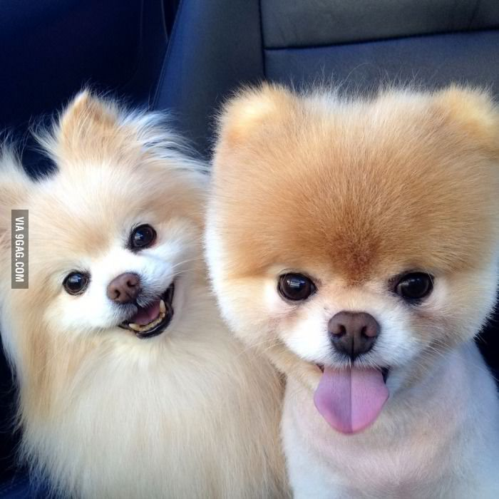
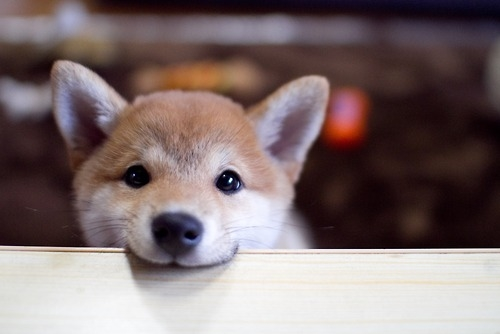

I just love DOGS. Dogs are just simply the best pets anyone can have.
My favorite kinds of dogs
- Beagles

- Pomeranians

- Shiba Inus

How to train a dog to sit
-
Show your dog a small bite-sized treat to grab his attention.
-
Push down his hind legs to be in a sitting postion then say "sit".
-
Give him the treat. He should associate this action with as a good thing.
-
Say sit again when your dog sits, give him the treat and tell him what a good doggy he is. (Prasise him without petting him.)
-
Practice making him sit five times a day for five days in a row.
"Dogs are not our whole life, but they make our lives whole." - Roger Caras